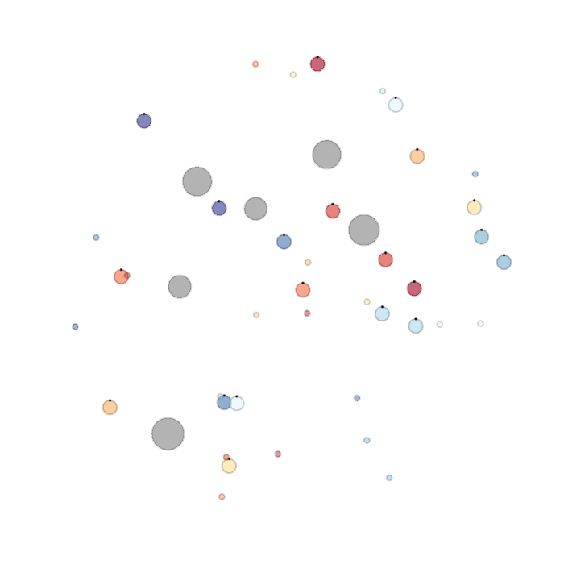
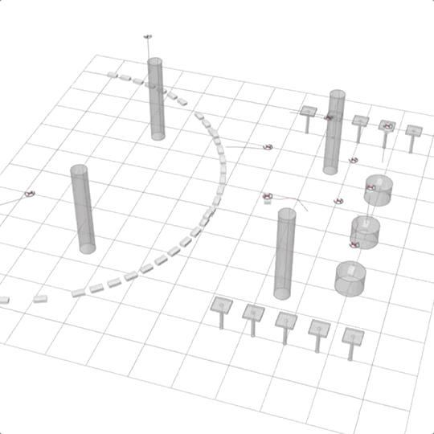
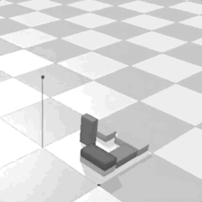
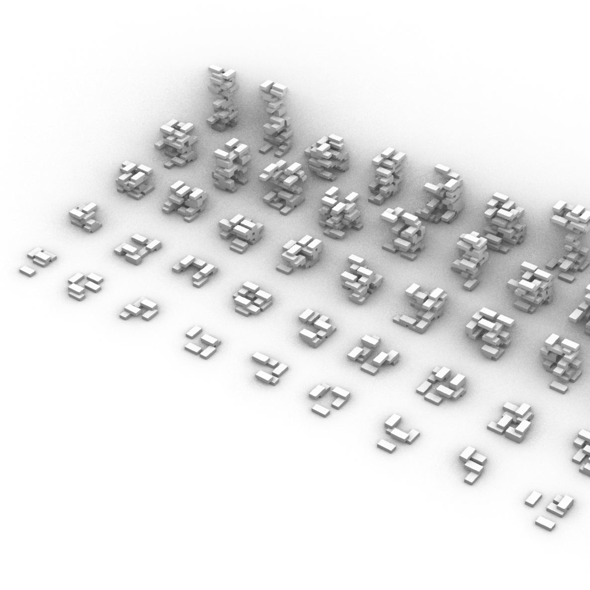
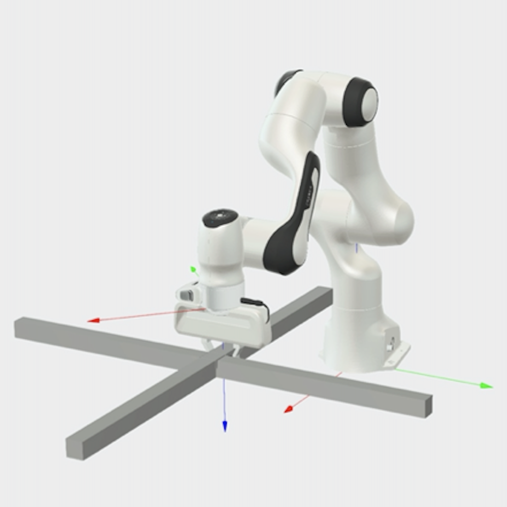
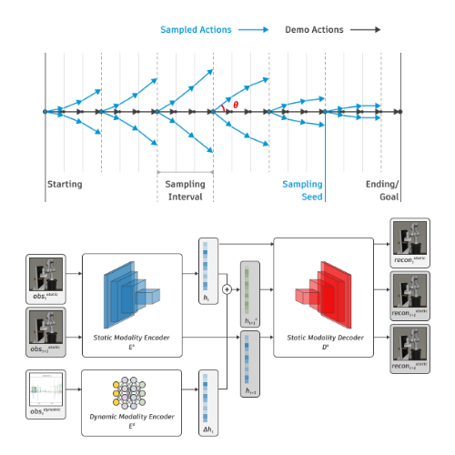
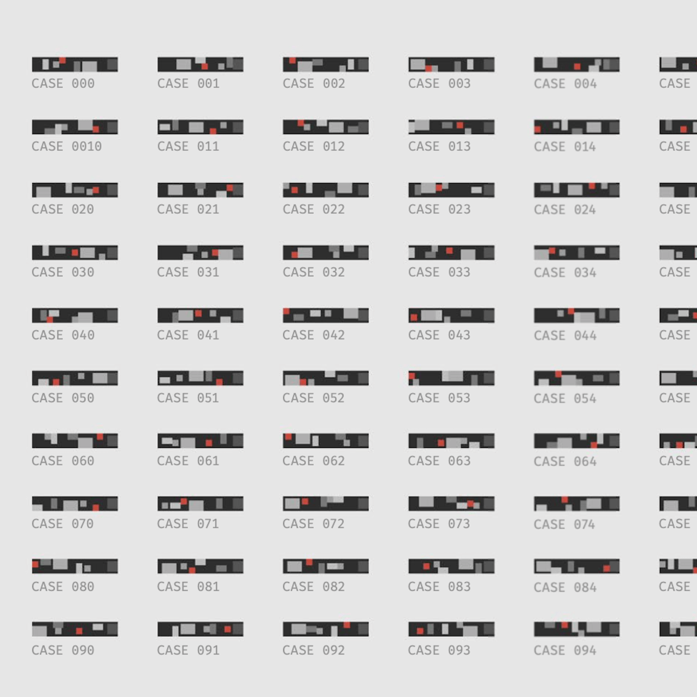
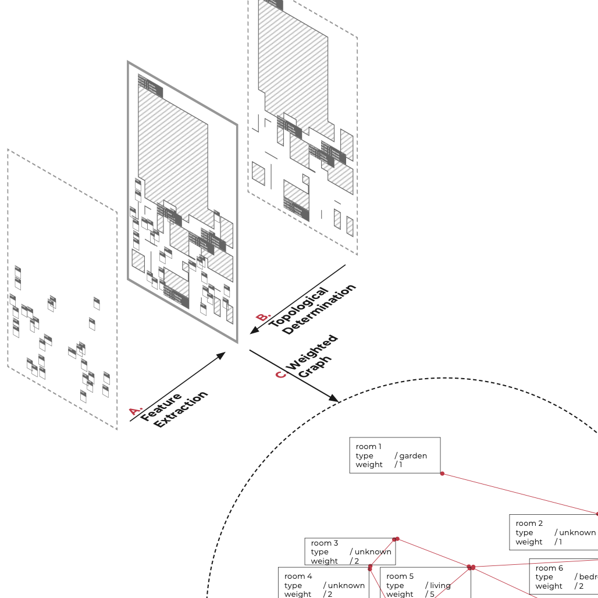

•
I'm a Ph.D. student at Carnegie Mellon University . I've also earned my M.S. in Machine Learning here. My research interest is in reinforcement learning, robotics, human-robot interaction, creative AI and computational design . With an interdisciplinary background in machine learning, robotics, and computational design, I’m constantly motivated by the vision of AI helping us build a better cyber-future, both virtually and concretely. I enjoy prototyping and making things from 0 to 1. I enjoy exploring solutions to critical problems. I’m a do-er . Prior to CMU, I obtained my M.Arch. and B.Arch. from Tsinghua University in Beijing, China. Since May 2018, I've co-founded a startup (Metascope Tech) that aims at providing B2B consultation to Chinese commercial architecture market. Applying ML and CV to an aesthetics recommendation system, we profile clients' spatial preferences to facilitate architects form better design decisions. In my leisure time, I enjoy photography, cooking, reading, and drum playing. I can be reached at yuningw [at] cs [dot] cmu [dot] edu . Brief bio .
If you are interested in the other side of me (SIDE-B: architect, maker, designer), click here .
•
2021-12 , I received Autodesk Research Merit Scholarship.
2021-05 , I received Manufacturing PA Fellowship from State of Pennsylvania and Carnegie Mellon University.
2021-02 , I joined Autodesk AI Lab as research intern, working in affiliation with Autodesk Robotics Lab.
2020-10 , I was awarded GSA/Provost GuSH Grant by Carnegie Mellon University.
2020-10 , Our team presented the multi-drone project in ACADIA 2020 DISTRIBUTED PROXIMITIES.
2019-11 , I was awarded Lego Scholarship for attending HI'19. Thank you, Lego Foundation!
2018-05 , I co-founded Metascope Tech in Beijing, China.
•
|
 |
 |
Towards a Distributed, Robotically-Assisted Construction Framework: Using Reinforcement Learning to Support Scalable Multi-Drone Construction in Dynamic Environments ACADIA 2020 / paper / video / code / slides Zhihao Fang, Yuning Wu, Ammar Hassonjee, Ardavan Bidgoli, Daniel Cardoso Llach |
|
 |
 |
Teaching AI Spatial Sense by Playing LEGO Yuning Wu, Katerina Fragkiadaki |
|
 |
 |
Learning Dense Reward for Partially Observable Contact-Rich Manipulation To be submitted to ICRA 2022 / code / slides Yuning Wu, Rodger Luo, Hui Li |
|
 |
 |
Design Architecture with Graphs: Utilize Connectivity To Inform Better Layout Design
Thesis Project / project page Yuning Wu |